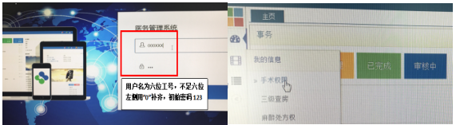
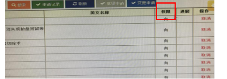
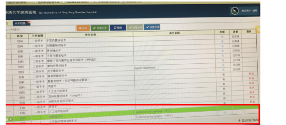
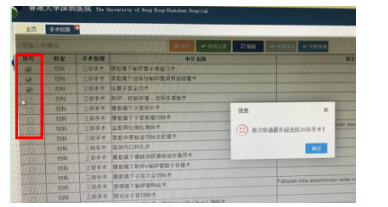
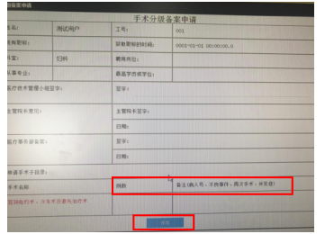

各位尊敬的妇产科医生：
您好，
按照三甲医院评审要求：每位医生需要熟悉自己的手术授权情况且无越级手术。为了方便临床医生申请手术权限、方便查询自身手术授权情况、保证没有越级手术，故现启用医务管理系统，今后医生申请手术权限均在医务系统中进行。
1、手术权限的审批首先需要经过科室医疗技术管理小组的同意。目前贵科室在医疗事务部备案的小组成员及审批权限如下：
|
妇科小组成员及审批邮箱： 颜婉嫦，hysngan@hku.
唐海峰，tanghf@hku-szh.org 张文举，zhangwj@hku-szh.org 王孝忠，wangxz1@hku-szh.org |
审批权限： 4人通过，方视为通过
|
|
产科小组成员及审批邮箱： 李之朋，leep@ha.org.
王洁，wangj9@hku-szh.org 侯延庆，houyq@hku-szh.org 陈凤莲，chenfj@hku-szh.org 周洲，zhouz@hku-szh.org 许育娴，xuyx9@hku-szh.org 罗力冰，luolb@hku-szh.org 褚永艳，chuyy@hku-szh.org 林胜谋，linsm@hku-szh.org 李佳倪，lijn@hku-szh.org 杨敬一，yangjy@hku-szh.org 徐跃，xuy@hku-szh.org 吴婷，wut@hku-szh.org 胡彦会，huyh@hku-szh.org 宋天蓉，songtr@hku-szh.org |
审批权限： 5人通过，方视为通过 |
|
IVF 小组成员及审批邮箱： 何柏松，pcho@hku.hk 吴鸿裕，nghye@hku.hk 李洁， lij10@hku-szh.org
|
审批权限： 4人全部通过，方视为通过 |
*小组成员、审批邮箱及审批规则如需变更，请联系8567，或直接回复邮件。
2、请科室医生登录医务系统个人账号查看您的手术授权是否正确：
操作方式如下：（同附件）
1、内网谷歌浏览器登录：http;//172.18.10.109:8089/csd/（用户名为六位工号，不足六位左侧用”0”补齐，初始密码123）查阅您的手术授权情况。如果您的电脑没有安装谷歌浏览器，可以拨打3594进行安装。

2、您登陆的医务系统中呈现的科室手术目录，部分来源于OT LIST中导出的目录，目前您科室正在使用，但是暂无人员授权，请需要授权的医生务必在本周五前（12月29日前）在系统中提出申请。
2018年1月1日之后，医生在CIS系统中申请手术时会匹配您的手术权限，无权限者无
法做为该项手术的主刀医生提交手术申请单
1）查询没有权限的手术

点击“手术权限”后进入到您的手术权限页面，里面的授权信息是根据您的手术授权档案册的内容录入的。点击“权限”可以排序。
2）申请

您已经申请过的手术项目无需再申请，没有申请过的项目请仔细查阅，在左侧方格中勾选需要申请的手术（可以主刀的手术）。

最多勾选20项手术，后点击“变更申请”。每申请20项，需要点击一次“变更申请”

填写手术权限申请表后，点击提交
3、申请的手术权限是指主刀医生权限，如果您仅做为某项手术的助手，无需申请此项手术权限。请您谨慎申请手术权限，需要达到科室的手术授权标准，方可申请。所有申请记录会申报给科室医疗技术管理小组
4、如出现系统异常或者有任何疑问，请联系86913333-8567；13530097563，也可以前往科教楼1503进行申请
5、如果您近期休假或外出学习，请您看到此封邮件后与医疗事务部联系
6、如果有刚定科医生或者新增加的需要进行手术权限授权的香港医生，请大家代为转告，谢谢。